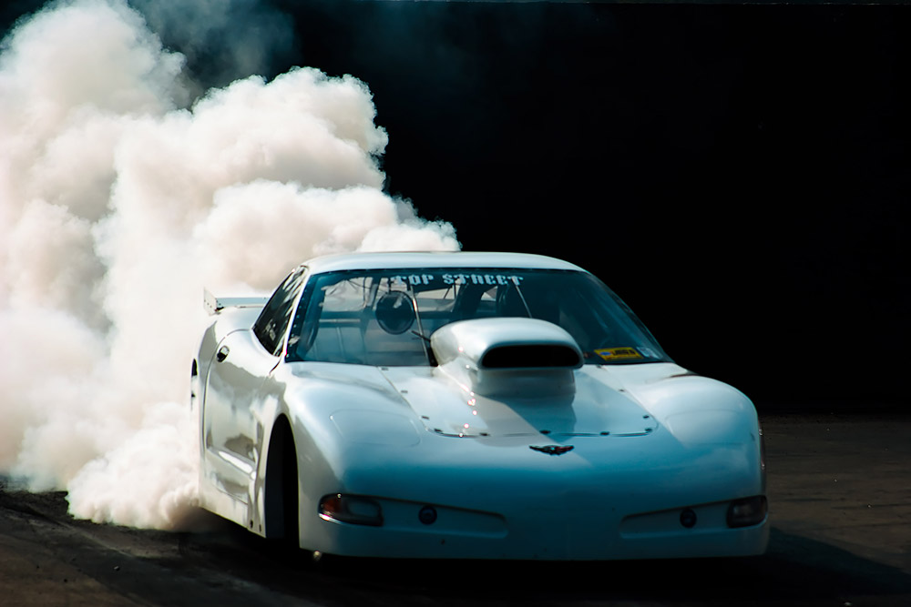

<!DOCTYPE html>
<html lang="en">
  <head>
    <meta charset="utf-8">
    <meta http-equiv="X-UA-Compatible" content="IE=edge">
    <meta name="viewport" content="width=device-width, initial-scale=1.0">
    <meta name="apple-mobile-web-app-capable" content="yes">
    <meta name="apple-touch-fullscreen" content="yes">
    <title>Driving Force</title>
    <!-- Picture Story Bootstrap CSS-->
    <link rel="stylesheet" href="css/picturestory-bootstrap.css?v4">
    <!-- Project CSS-->
    <link rel="stylesheet" href="css/project.css?v11">
    <!-- HTML5 shim, for IE6-8 support of HTML elements-->
    <!--if lt IE 9
    script(src='https://oss.maxcdn.com/libs/html5shiv/3.7.0/html5shiv.js')
    script(src='https://oss.maxcdn.com/libs/respond.js/1.3.0/respond.min.js')
    -->
    <!-- Icon-->
    <link rel="shortcut icon" href="css/favicon.png">
  </head>
</html>
<body id="top" data-spy="scroll" data-target=".subnav" data-offset="80" class="story-nav">
  <!-- NAVBAR-->
  <header class="navigation navbar-fixed-top">
    <div id="navbar-story" role="navigation" class="navbar navbar-default storybar">
      <div class="row"></div>
    </div>
    <div id="navbar-product" role="navigation" class="navbar navbar-default">
      <div class="container-fluid">
        <div class="navbar-header">
          <button type="button" data-toggle="collapse" data-target="#product-navbar-collapse" class="navbar-toggle"><span class="sr-only">Toggle navigation</span><span class="icon-bar"></span><span class="icon-bar"></span><span class="icon-bar"></span></button>
        </div>
        <div id="product-navbar-collapse" class="collapse navbar-collapse navbar-left">
          <ul class="nav navbar-nav">
            <li class="dropdown"><a href="#" data-toggle="dropdown" class="dropdown-toggle navbar-brand-knightlab">Picture Story<b class="caret"></b></a>
              <ul class="dropdown-menu">
                <li>
                  <div class="container about-knightlab">
                    <div class="row">
                      <div class="col-sm-12">
                        <h3>About</h3>
                        <p>Bootstrap templating system for photo layouts.</p>
                        <div class="btn-group"><a href="http://picturestory.knightlab.com" class="btn btn-default"><span style="margin-right:5px;" class="glyphicon glyphicon-home"></span>Home</a><a href="https://github.com/NUKnightLab/Picture-Story/archive/master.zip" class="btn btn-default"><span style="margin-right:5px;" class="glyphicon glyphicon-save"></span>Download the Template</a><a href="https://github.com/NUKnightLab/Picture-Story" class="btn btn-default"><span style="margin-right:5px;" class="icon-github"></span>GitHub</a></div>
                      </div>
                    </div>
                  </div>
                </li>
              </ul>
            </li>
            <li><a id="stories-btn" href="#"><span style="margin-right:5px;" class="icon-stack"></span>More Stories</a></li>
            <li id="navbar-title">Picture Story</li>
          </ul>
        </div>
        <div class="collapse navbar-collapse navbar-right">
          <ul class="nav navbar-nav">
            <li><a href="http://knightlab.northwestern.edu/" target="_blank" title="Knight Lab" class="knightlab-logo"></a></li>
          </ul>
        </div>
      </div>
    </div>
  </header>
  <article>
    <section class="container story-header">
      <div class="row">
        <div class="col-md-6">
          <figure><a href="photos/driving_force/drivingforce_3439.jpg" rel="enlarge" class="enlarge"></a>
            <figcaption class="credit">Zach Wise</figcaption>
            <figcaption>The Camero started dragging it's parachute before lining up for its first run in the time trials. Parachutes are needed in the Pro-Mod class in order to help the car slow down before reaching the end of the drag strip. Cars unable to stop in time and landing in the river at the end of the strip are a yearly occurrence.</figcaption>
          </figure>
          <h1 style="font-weight:900;" class="extra-large align-right text-italic">Driving Force <small class="text-normal">Dragracing in the farmlands of Ohio.</small></h1>
          <p class="lead align-right">The smell of alcohol and bubble gum clear your sinuses and distract your ears from the roaring motors as you approach the Kanawha Valley Dragway Park.</p>
          <p class="byline align-right">by Zach Wise</p>
          <p><span class="dropcap">D</span>riving along State Route 35 you pass Point Pleasant, WV and enter farm country running along an Ohio River tributary near the West Virginia border to Ohio. Farm houses, horse barns and a feed supply are scattered every 1/2 mile or so along 35 until you almost pass a sign that says “Kanawha Valley Dragway Park: Drag Racing Every Saturday Night.”</p>
          <figure class="figure-pull-left"><a href="photos/driving_force/drivingforce_3424.jpg" rel="enlarge" class="enlarge"></a>
            <figcaption class="credit">Zach Wise</figcaption>
          </figure>
          <p>It is an odd sight, to say the least, to stumble upon a 1/8th mile drag raceway in the middle of corn fields but then again nothing should seem as natural as to expect this to be the perfect place for a Dragpark. Generations of the families in the region have grown up learning how to fix tractors, bailers, trucks, and family cars. The very livelihood of many of the families in this valley is dependent on the knowledge bestowed from generation to generation on the fickle nature of the combustion engine. Motors are needed to harvest the crops, deliver the crops, fetch groceries and in fierce winters, to provide electricity. It is only natural to want to prove this knowledge superior to anyone else’s and to get a few thrills out of it. The location of the Dragway Park seems perfect.</p>
          <p>Lorem velese feugait prat. Ci bla consequi tat, sed ming et, volorer iril incil eugiam velenissi tio dolum del ulla faci blandrem alit lam, quam, quisi tiniam zzriusto dolorem dolore dunt am, quam dolestie te tinis eugueri liquis niamcon sequip el irillam nulluptate dolore dunt autem nos adiat, quisl utem autpat lore tat ad estrud et, sim in utet, si tio euipit nos atem vel utpat doloreet nit et euisim dolutatue dit lore dunt utat, quamet ipisl utpat. Ut lore feu faciliquat amcon ut utpat. Ecte dit nummy niat at. Ut alis nostrud magna facidui scipis aut ad tis ea feugiam, quat.</p>
          <blockquote>
            <p>$100 to enter the race plus the cost of  fuel, 1st place wins a hundred bucks, so it's not about the money.</p>
            <cite>Larry McFee</cite>
          </blockquote>
          <p>Sandre tatum ing enim vel ipit er sequam verit aut verit utet velit, conse minim dunt eu faccum vel dolortie tet, quisl utpat. Ut ullam accum quamet autet augait esequate dolor se dolobortis elisl inisl diam, velesectet ad et lamconu llaorpero consed dolore estincipit lut amet vel dolesto enibh eratis dipsums andiat, consequis nullaor at, cor summolu tatuerosto dunt num zzriureetum nit nos nit luptate doluptat. Rilisit nos acin euipit alit, sim eugue feum ipiscilit laore cor aliquisis aciduip sustrud tie eu facinci ncillaore</p>
        </div>
        <div class="col-md-6">
          <figure><a href="photos/driving_force/drivingforce_3508.jpg" rel="enlarge" class="enlarge"></a>
            <figcaption class="credit">Zach Wise</figcaption>
            <figcaption>The Race is The first few seconds of a drag race a crucial, to make sure the car doesn't spin out on the starting line the drivers spin their tires on their approach to the starting line. Spinning, or smoking the tires melts the surface of the tires so that it becomes sticky, preventing spin-outs at the green light.</figcaption>
          </figure>
          <figure><a href="photos/driving_force/drivingforce_3549.jpg" rel="enlarge" class="enlarge"></a>
            <figcaption class="credit">Zach Wise</figcaption>
            <figcaption>Jacob Holstein is competing in the Jr. class. The Jr. rails (drag car) are equipped with a 5 horsepower motor but are capable of an excess of 80 mph. Jacob's father, Clair, is also competing at the dragway even though he has recently had a stroke.</figcaption>
          </figure>
          <figure><a href="photos/driving_force/drivingforce_3591.jpg" rel="enlarge" class="enlarge"></a>
            <figcaption class="credit">Zach Wise</figcaption>
            <figcaption>Keith McFee helps his father, Larry McFee, load up his custom built camero after losing in the first round. Several months ago Larry had a heart attack on the drag strip. Having recovered and given the OK from his doctor Larry was soon back in the points race</figcaption>
          </figure>
        </div>
      </div>
    </section>
  </article>
  <!-- Footer-->
  <footer id="footer">
    <div class="about-knightlab">
      <div class="container-fluid">
        <div class="row">
          <div class="col-lg-2 col-md-1 hidden-sm hidden-xs"></div>
          <div class="col-lg-2 col-md-3 col-sm-4 col-xs-4 knightlab-logo-column"><a href="http://knightlab.northwestern.edu" target="_blank"></a>
            <ul class="social list-inline">
              <li><a href="http://www.twitter.com/knightlab" target="_blank" title="Knight Lab on Twitter"><span class="icon-twitter"></span></a></li>
              <li><a href="https://www.facebook.com/knightlab" target="_blank" title="Knight Lab on Facebook"><span class="icon-facebook"></span></a></li>
              <li><a href="https://github.com/NUKnightLab/" target="_blank" title="Knight Lab on GitHub"><span class="icon-github"></span></a></li>
            </ul>
            <address itemscope="" itemtype="http://data-vocabulary.org/Organization"><span style="display:none;" itemprop="name" title="Knight Lab | Advancing news media innovation through exploration and experimentation." class="address-name">Knight Lab</span><span itemprop="address" itemscope="" itemtype="http://data-vocabulary.org/Address" class="address"><span itemprop="street-address" class="street-address">1845 Sheridan Road<br>Fisk #109 &amp; #111, </span>
                <div class="address-group"><span itemprop="locality">Evanston,</span><span itemprop="region">IL. </span><span itemprop="postal-code">60208</span><br><a href="https://maps.google.com/maps?q=1845+Sheridan+Road+Evanston+IL+6020&amp;amp;hl=en&amp;amp;ll=42.050942,-87.673511&amp;amp;spn=0.003059,0.004898&amp;amp;sll=42.050647,-87.674246&amp;amp;sspn=0.012237,0.019591&amp;amp;gl=us&amp;amp;hnear=1845+Sheridan+Rd,+Evanston,+Cook,+Illinois+60201&amp;amp;t=m&amp;amp;z=18&amp;amp;iwloc=A" target="_blank"><i>+ </i><span>map</span></a><br><span itemprop="country-name" class="address-country">United States</span></div></span><span style="display:none;" itemprop="geo" itemscope="" itemtype="http://www.data-vocabulary.org/Geo/" class="geo">Latitude: <span itemprop="latitude">42.056893</span><br>Longitude: <span itemprop="longitude">-87.676735</span></span><br><span itemprop="tel" class="tel">(847) 467-4971</span><a style="display:none;" href="http://knightlab.northwestern.edu" itemprop="url" class="url">Northwesten University Knight Lab | Advancing media innovation through exploration and experimentation.</a></address>
          </div>
          <div class="col-lg-5 col-md-6 col-sm-8 col-xs-8">
            <div class="knightlab-description">
              <p>The <a title="Northwestern University" href="http://www.northwestern.edu/" target="_blank">Northwestern University</a> Knight Lab is a team of technologists and journalists working at advancing news media innovation through exploration and experimentation.</p>
              <p>A joint initiative of the <a href="http://www.mccormick.northwestern.edu/" target="_blank">Robert R. McCormick School of Engineering and Applied Science</a> and the<a href="http://www.medill.northwestern.edu/" target="_blank"> Medill School of Journalism, Media, Integrated Marketing Communications</a>.</p>
            </div>
          </div>
          <div class="col-lg-1 col-md-1 col-sm-1"></div>
        </div>
        <div class="row">
          <p class="copyright">All images &copy; Copyright 2014 Credited Authors |  &copy; Copyright 2014 Northwestern University</p>
        </div>
      </div>
    </div>
    <!--
    div.knightlab-projects
    
     include footer-storybar
     
    -->
  </footer>
  <!-- JavaScript-->
  <script type="text/javascript">var path = "";</script>
  <script type="text/javascript" src="http://ajax.googleapis.com/ajax/libs/jquery/1.10.2/jquery.min.js"></script>
  <script type="text/javascript" src="js/project.js?v10"></script>
</body>